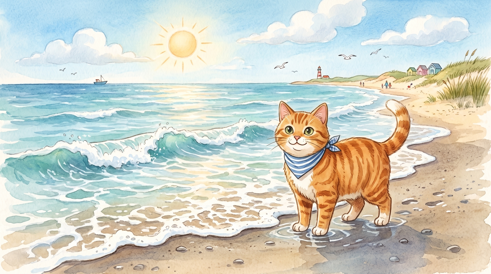

Step 1 · Say the Blend
st
s and t keep both sounds. Slide them together: st, like stop.
🛑stop
👣step
🌿stick
Read st blend words. Then read one tiny story.

s and t keep both sounds. Slide them together: st, like stop.
Beach Cat steps on the sand.
Beach Cat sees a stick.
Stop, Beach Cat!
Beach Cat steps back.
The stick is still.
Beach Cat sits by the sand.
You read st words like stop, step, and stick.
That’s a strong blend.
If it still feels fun, read the story one more time.